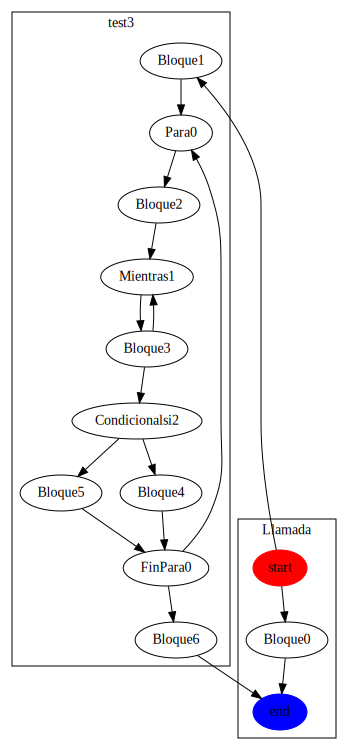

Resumen del programa .\Ejemplos\PL2-Ej3.psc
Funcion test3:void
- Complejidad ciclomatica V(G): 6
- Puntos funcion: 28239
- Resumen:
- Numero de variables declaradas: 8
- Numero de llamadas a funciones: 4
- Numero de lineas de codigo efectivas: 39
- Numero de parametros esperados: 0
- Puntos de declaraciones: 8
- Puntos de parametros: 0
- Puntos de llamada de funciones: 12
- Puntos de operacion simple: 3
- Puntos de bucle/bifurcacion: 28224
- Grafico de complejidad ciclomatica:

Funcion Llamada:dato
- Complejidad ciclomatica V(G): 1
- Puntos funcion: 6
- Resumen:
- Numero de variables declaradas: 0
- Numero de llamadas a funciones: 0
- Numero de lineas de codigo efectivas: 1
- Numero de parametros esperados: 3
- Puntos de declaraciones: 0
- Puntos de parametros: 6
- Puntos de llamada de funciones: 0
- Puntos de operacion simple: 0
- Puntos de bucle/bifurcacion: 0
- Grafico de complejidad ciclomatica:

Programa .\Ejemplos\PL2-Ej3.psc
- Complejidad ciclomatica total: 6
- Suma de puntos de funciones: 28245
- Suma de lineas de codigo efectivas: 40
- Grafico del programa:
